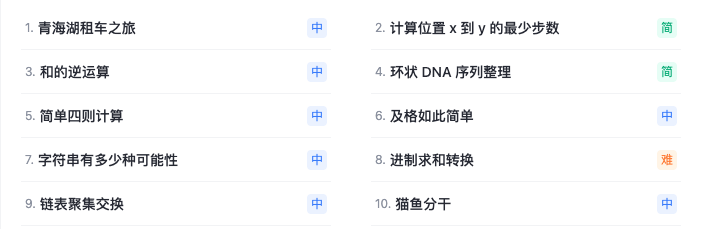
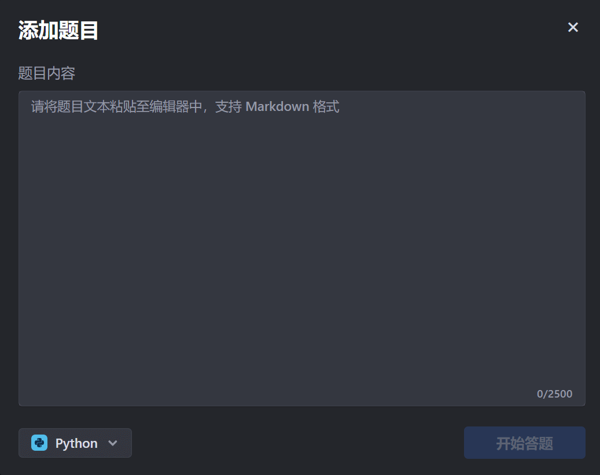
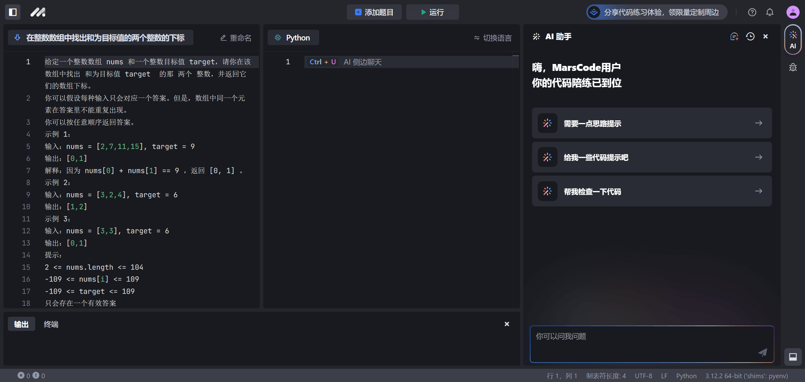
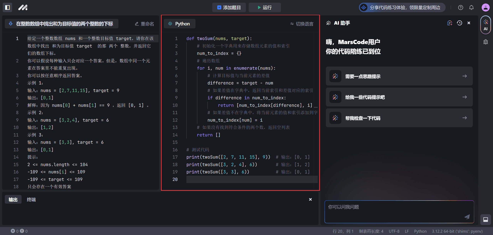
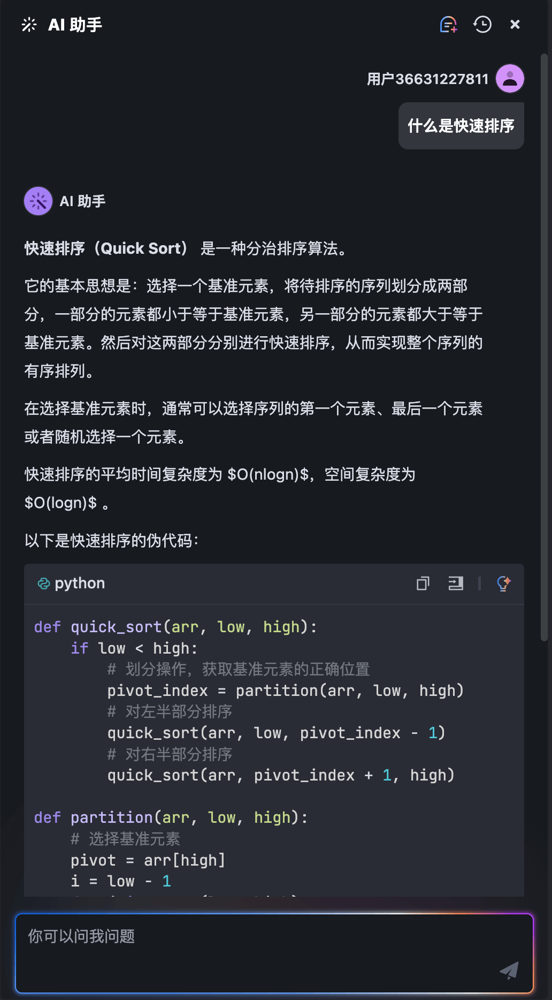
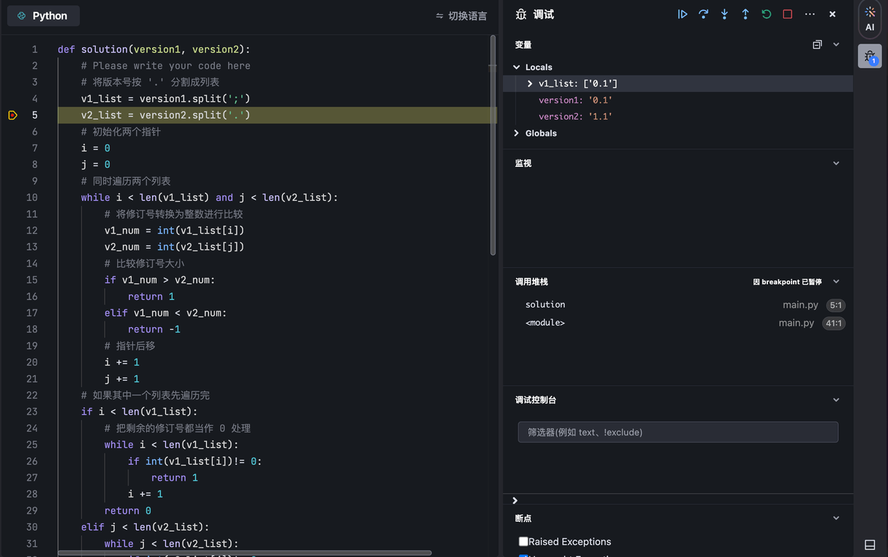
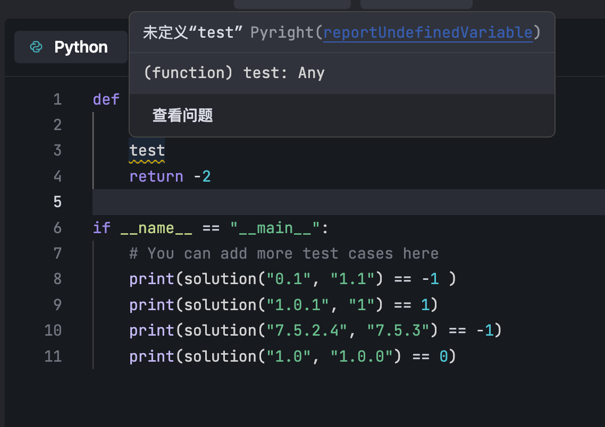

Algorithm Code Practice
To improve your algorithm skills, practical programming is key. In the past, developers often encountered difficulties when learning to code on their own, and were easily troubled by tedious processes or small bugs. The [Code Practice] section of Doubao Marscode combines a full-featured code editor with AI capabilities, helping developers learn algorithms efficiently under the guidance of an AI companion.
Click the linkhttps://marscode.cn/practice/to enterDoubao Marscodecode practice page.
Supported languages include: Python, JavaScript, Go, C++, C, Java, Rust, TypeScript, etc.
Operation Process
Step 1: Open Built-in Problems / Create Custom Problems
Doubao MarsCode (Code Practice Edition) has 100 built-in problems, including past real questions from major tech companies, divided into three difficulty levels: easy, medium, and hard. You can use these problems to practice your programming skills.


If the built-in problems cannot meet your needs, you can create your own problems to practice. The steps to create a problem are as follows:
1. At the top navigation bar, click theAdd Problembutton.
On the page, theAdd Problemwindow pops up.

2. In theProblem Contentfield, enter your problem.
3. In the language list at the bottom left, select the language for answering.
4. Click theStart Answeringbutton.
The problem content is added to theProblempanel.

5. (Optional) After creating the problem, if you need to modify the problem title, click theRenamebutton to make changes.
Step 2: Solve the Problem
After opening a built-in problem or adding a custom problem, enter code in the code editor area on the right side of the problem panel to solve the problem.
Before starting to answer, if you need to switch the answer language, you can click theSwitch Languagebutton, then select a new language from the list.
During the answering process, if you need the AI assistant's help, click the button at the top of the right sidebarAIto open the AI assistant chat box, then click the corresponding button to get idea hints and code hints, or let the AI assistant check the code you entered.

Step 3: Run the Code
After completing the answer, click theRunbutton to run your code, and then in the bottomOutputpanel, view the code execution results.

Manage Problems
Click theToggle Auxiliary Sidebarbutton, or use theCtrl + Alt + Bkeyboard shortcut to open the problem list, and then switch or delete problems in the list.

AI Assistant
The MarsCode AI Assistant can provide you with problem-solving ideas or code hints, and can also help you check your code.
|
|


You can ask follow-up questions at any time about knowledge points you are unclear about.
|
|


The AI companion can also help you check your current code and provide suggestions for improvement.
|
|


For any other programming-related questions, you can consult the AI companion at any time.
|
|
 |


A More Convenient Editor
Doubao MarsCode provides a full-featured code editor with more complete features that better match developers' daily usage habits, making problem-solving practice smoother.
debug

Error Checking

Terminal Panel
TerminalThe panel displays information related to code execution, such as the practice number when execution succeeds and error messages when execution fails. When an error occurs, you can hover your mouse over the error and click theAI Fixbutton to use the AI Assistant to help fix the error.

In addition, you can create a new terminal, split the terminal, and launch configuration files.

Click to Share Notes
<p style="font-size:14px;">The note must be an extension of the content of this article!</p><br> <p style="font-size:12px;"><a href="../tougao.html" target="_blank">To submit an article, click here</a></p> <p style="font-size:14px;"><a href="./runoob-user-test-intro.html" target="_blank">How to obtain a registration invitation code</a></p> <h3 class="text-muted"><i class="fa fa-info-circle" aria-hidden="true"></i> You must <a href=".." class="runoob-pop">log in</a> before sharing notes!</h3> <p><a href="./runoob-user-test-intro.html" target="_blank">How to obtain a registration invitation code</a></p>